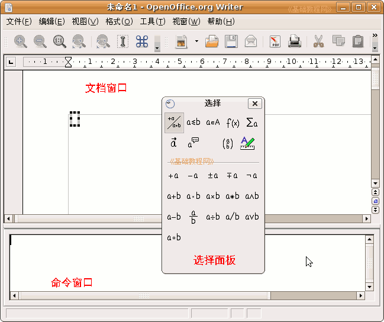

OpenOffice.org 教程之 Writer 文字处理
作者：TeliuTe 来源：基础教程网
八、插入公式 返回目录 下一课有时我们需要输入一些特殊式子，比如数学公式、化学方程式等等，在 Writer 中怎样输入它们呢？下面我们来看一个练习；
1、公式编辑器
1）启动Writer，自动打开一个空白文档；
2）点菜单“插入－对象－公式”命令，工作区闪一下，变成上下两栏，下面分出一个“命令窗口”；
如果对象菜单里的“公式”是灰色的，那么就到新立得里面搜索“math”安装Openoffice.org Math；
2）在工作区中间出来一个“选择”小面板，如果没有出来就点菜单“视图－选择”，打勾选中就出来了；

2、插入公式1）在中间的“选择”面板里第一排上点 f(x) 按钮，下面变成函数小面板，
在下面找到第一排的 Xy 乘冥，点一下这个乘冥，命令窗口里出来一个式子；
2）在第一个 <?> 里面输入 (a+b) ，再选中后面的 <?> 输入 2 ，把光标移到花括号后面的空白处，
观察一下上面文档窗口的变化，注意都是英文的括号，选择后面的时候细心；
3）接着输入等号 = ，再点“乘冥” Xy 按钮，在出来的式子里，第一个 <?> 输入 a ，后面一个输入 2，
观察一下上面文档窗口的公式变化，把光标移到最后；
4）接着输入 +2ab+ ，再点“乘冥”按钮 Xy ，在两个 <?> 里面分别输入 b 和 2 ，观察一下上面文档窗口的变化；
5）这样就输好了一个完全平方公式，在上边的文档窗口空白处点一下，结束公式输入，回到文字编辑状态；
以“插入公式”为文件名，保存文件到自己的文件夹；
6）熟练以后可以直接在命令窗口里，按照格式输入公式，
在菜单“应用程序－办公－OpenOffice.org 公式”里，可以打开公式获得更多帮助内容；
本节学习了输入公式的基本操作，如果你成功地完成了练习，请继续学习下一课内容；
本教程由86团学校TeliuTe制作|著作权所有
基础教程网：http://teliute.org
美丽的校园……
转载和引用本站内容，请保留版权信息和本站链接。